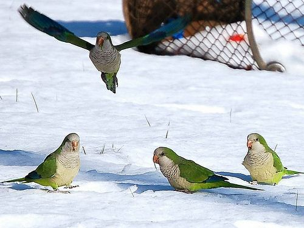

adaptability
Despite the fact that parrots are typically linked with tropical habitats, they are not all tropical birds; there are over 398 kinds! Although most of them live in tropical areas, these birds can adapt to a variety of environments quite quickly; in fact, some of them have even adapted to the cold weather in Europe. Their ability to adapt to new environments is related to their intelligence; parrots are as intelligent as a five-year-old human, and they can communicate with one another and even identify each other in relatively similar way that we do with our faces and names. Parrots' long lifespan, which can last up to 80 years, also allows them to be very experienced and communicate that to the younger ones.